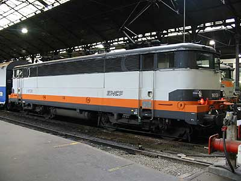
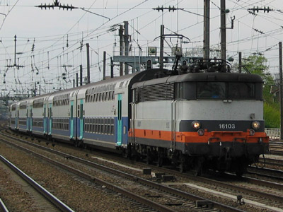
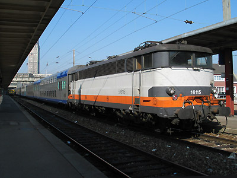
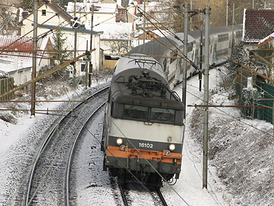

Ferrovia - 26 Octobre 2012
BB 16100
Les BB 16100 sont 15 locomotives issues de la série BB 16000 et transformées pour la traction-pousse des rames V2N, entre 1991 et 1993. Elles ont été radiées massivement en 2009, remplacées par des BB 15000 modifiées pour ce même service.
Les BB 16100 parcouraient les lignes Paris St Lazare-Rouen-(Le Havre) sur l'Ouest, Paris-Beauvais, Paris-Amiens et Paris-Compiègne sur le réseau Nord.
Les modifications étaient proches de celles apportées aux quatre BB 9200 transformées en BB 9700 : ajout d'un automate et de la connectique pour recevoir les informations de traction et de freinage provenant de la voiture pilote V2N via un réseau multiplexé généralisé (MUX-G), remplacement du pupître anté-diluvien par un pupître ergonomique, livrée spécifique reprenant les coloris Corail et qui n'était curieusement pas en accord avec le matériel remorqué plus inspiré par le TGV Atlantique.
Quelques données techniques
Constructeur : Jeumont MTE
Tension d'alimentation : monophasé 25 kV, 50 Hz
Chaîne de traction : Graduateur linéaire 15 kV, redresseurs à diode silicium
Motorisation : 1 moteur 920 V par essieu
Puissance totale : 4130 kW
Vitesse limite : 160 km/h
Longueur : 16,680 m
Masse : 88t
Pantographes : 2 x AM 11
Pour plus d'info :
La fiche BB 16100 sur Wikipedia
L'inventaire des BB 16100 sur Trains du Sud-Ouest

La BB 16106 (ex-16009) à Paris St Lazare

La BB 16103 (ex-16046) traverse Clichy-Levallois (14/04/2003)

La BB 16115 (ex-16060) au pied du beffroi d'Amiens (19/09/2003)

La BB 16102 détournée par la ligne de Conflans passe à la Frette (05/03/2005)